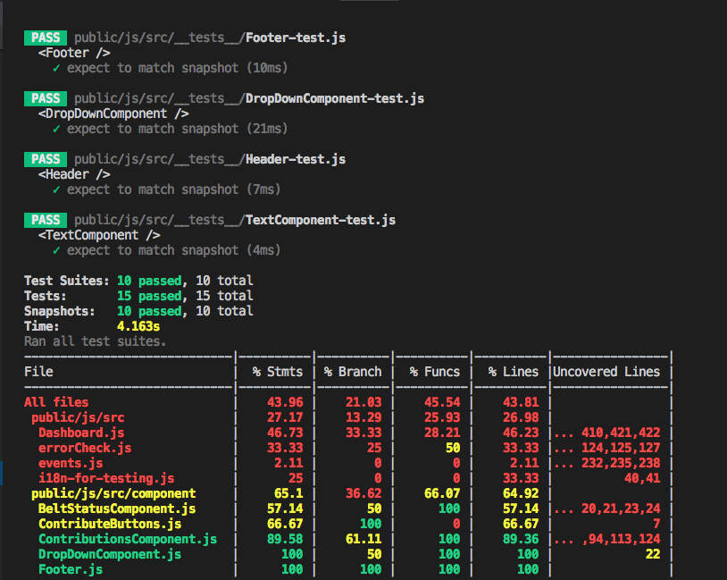

Testing & React
Jest, Enzyme, and Sinon
Created by Jed Bursiek - Green Badge
Disclaimer
The opinions stated in this presentation are the result of research into the current trends in the React community - there are other ways to test React.
But this is probably the best way.
Why Write tests?
Isn't that just extra work?
We write tests to..
- Prevent code from breaking while refactoring
- Prevent other developers from breaking your code
- Prevent new code breaking old code
- Note changes in the UI with Snapshots
Jest
What is it?
Jest is a testing framework for JavaScript
authored by Facebook
...the same group who created React
Wait a second...
What the heck is REACT?
for building componentized user interfaces
Components have two types of data
State data is specific to a component (class)
Props data is passed between components

React is most commonly used with JSX
(Javascript Syntax Extension)
JSX is a declarative XML/JavaScript hybrid language
Which gets transpiled into browser readable
JavaScript and HTML
Imperative vs Declarative
Imperative
$.post('/login', credentials, function( user ) { // Modify the DOM $('header .name').text( user.name ); }); Not Logged InDeclarative
render: function() { const name = this.state.name; return{ name ? name : Not Logged In } };
|
Imperative |
VS |
Declarative |
When the state or props are updated the component will re-render
To render output React uses a heuristic method
that diffs the existing component tree
with the new desired tree

The diff-ing takes place in the Virtual Dom
which makes it fast
When the update is called it triggers
all these life-cycle methods
- componentWillReceiveProps()
- shouldComponentUpdate()
- componentWillUpdate()
- render()
- componentDidUpdate()
Why use Jest?
- Snapshots
- Now supports async testing
- Facebook does it
Snapshots
Snapshots are rendered versions of a particular state.
HTML generated by the React component is saved auto-magically into snapshot file
Testing will compare snapshot files against the rendered version and output any differences
Async Tests
Jest has been revamped considerably in the last few years can now handle async tests.
Facebook does it
Jest is used by Facebook to test React applications
So they made it easy...
Put your test scripts inside
__tests__ directory and run $npm test
Enzyme
What is it?

Enzyme is a wrapper that makes it simpler
to write unit tests with Jest.
- helpers to easily traverse a react component tree
- set state and props for testing
ParentComponent
class ParentComponent extends Component { constructor(){ this.state = {value: "Hello"} } handleClick(){ this.setState({value: "Goodbye"}); } render() { return( <button onClick={handleClick}>{this.state.value}</button> <ChildComponent /> ); } }
ChildComponent
class ChildComponent extends Component { render() { return( <h2>World</h2> ); } }
//__tests__
import { shallow } from "enzyme";
import ParentComponent from "../ParentComponent";
const wrapper = shallow(<ParentComponent />);
console.log(wrapper.debug());
----------------------
<button>Hello</button>
<ChildComponent />
//__tests__
import { mount } from "enzyme";
import ParentComponent from "../ParentComponent";
const wrapper = mount (<ParentComponent />);
console.log(wrapper.debug());
----------------------
<button>Hello</button>
<h2>World</h2>
//__tests__
import { shallow } from "enzyme";
import ParentComponent from "../ParentComponent";
const wrapper = shallow(<ParentComponent />);
expect(wrapper.toMatchSnapshot());
----------------------
FAIL
<button>Hellor</button>
<ChildComponent />
//__tests__
import { shallow } from "enzyme";
import ParentComponent from "../ParentComponent";
const wrapper = shallow(<ParentComponent />);
//CLICK SETS STATE TO "Goodbye"
wrapper.find('button').simulate("click");
wrapper.update();
expect(wrapper.find("button").text().toBe("Goodbye"));
console.log(wrapper.debug());
----------------------
PASS
<button>Goodbye</button>
<ChildComponent />
Sinon
What is it?
Standalone unit testing library for JavaScript.
Supplies spies, stubs and mocks.
How to use it?
- Spy on functions
- Stub functions
Common Types of Spy
- spy.called;
- spy.returned(obj);
- spy.threw();
- spy.args
//__tests__
import { shallow } from "enzyme";
import { sinon } fom "sinon";
import ParentComponent from "../ParentComponent";
const spyFunc = sinon.spy(ParentComponent.prototype, "handleClick");
const wrapper = shallow(<ParentComponent />);
wrapper.find('button').simulate("click");
wrapper.update();
//CHECK FUNCTION CALLED
expect(spyFunc.called).toBe(true);
Common Types of Stub
- stub(obj, 'method').callsFake(fakeFunction);
- stub.returns(obj);
- stub.throws("TypeError");
ParentComponent
class ParentComponent extends Component { constructor(){ this.state = {value: "Hello"}; } handleClick(){ const msg = axios.get("api/getMessage"); this.setState({value: msg}); } render() { return( <button onClick={handleClick}>{this.state.value}</button> ); } }
//__tests__
import { shallow } from "enzyme";
import { sinon } fom "sinon";
import ParentComponent from "../ParentComponent";
const stubFunc = sinon.stub(ParentComponent.prototype, "handleClick");
const wrapper = shallow(<ParentComponent />);
const fn = function(){
wrapper.setState("Message");
}
stubFunc.callsFake(fn);
wrapper.find('button').simulate("click");
wrapper.update();
expect(wrapper.find("button").text().toBe("Message"));
----------------------
PASS
<button>Message</button>

Setup
- node install
- package.json
- jestsetup.js
- shim.js
$npm install --save-dev enzyme enzyme-adapter-react-16 enzyme-to-json
"jest": {
"setupFiles": [
"./test/shim.js",
"./test/jestsetup.js"
],
"snapshotSerializers": [
"enzyme-to-json/serializer"
]
}
// React 16 Enzyme adapter
import Adapter from 'enzyme-adapter-react-16';
Enzyme.configure({ adapter: new Adapter() });
global.requestAnimationFrame = function(callback) {
setTimeout(callback, 0);
};
FIN
Next time - "Socio-economic effects of Intel's BBCS"
Beverage Based Caste System
Resources
- React
https://reactjs.org/ - Intro to Enzyme and React
https://jonbellah.com/articles/intro-react-testing/ - Enzyme Cheat Sheet
https://devhints.io/enzyme - Sinon Stubs
http://sinonjs.org/releases/v4.1.3/stubs/